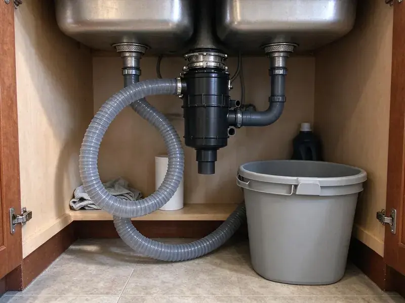

Garbage Disposal Installation in Millcreek, UT
Get a new garbage disposal installed safely and cleanly in Millcreek, UT, usually in about two hours.
- Disposals on the Truck
- Dishwasher Connection Included
- Same-Week Install Scheduling
- Two-Hour Installs
Need a New Garbage Disposal Installed in Millcreek, UT?
Call and we'll help you choose the right size disposal for your home.
Clean Garbage Disposal Installation in Millcreek, UT
BPK Plumbing installs garbage disposals across Utah, from straight swaps to kitchens that never had one. Every install gets a new mount. Old flanges and dried gaskets cause most first-month leaks on new disposals, which is why both get replaced on every job.
Work we handle every week:
- Leak-free, tight mounting for all units
- Connect dishwasher drains through air gaps or high loops
- Install every major disposal brand

Additional Kitchen Plumbing Services in Millcreek, UT
Our kitchen plumbing services in Millcreek, UT cover sinks, disposals, dishwashers, and grease traps so your kitchen stays clean, safe, and fully functional.


Customers
Why Choose BPK Plumbing for Garbage Disposal Installation in Millcreek, UT?
A poorly installed disposal leads to repairs later. We take the extra ten minutes. That time goes into checking the trap height, setting the discharge tube at the right angle and making sure the dishwasher hose runs a proper high loop instead of sagging.
- Local Experience, We know the codes and drain layouts common in Millcreek kitchens.
- Full Testing, Every install is run with water and checked joint by joint.
- Right Size, We match horsepower to how much you cook and your household.
Citywide Coverage
Every neighborhood and suburb of Millcreek is covered for disposal installs. A plumber comes to your door. Installs usually book within a few days, and for a dead disposal with a full sink we aim for the same day.
Experienced Team
Both the plumbing and the basic electrical needs of disposals are familiar to our plumbers. New circuits go to an electrician. If a new outlet or circuit is needed, they schedule a licensed electrician so power and plumbing get done the same day.
Safety-First Approach
We follow Utah plumbing code for trap and dishwasher drain connections and the manufacturer's electrical requirements. Wiring happens with the power off. The breaker gets shut off and the wires tested with a meter before any connection is made at the unit or junction box.
Trusted Certified Millcreek Plumbing Services Professionals
At BPK Plumbing, we take pride in licensed, certified plumbing services throughout Millcreek, UT. Credentials matter in this trade. Our plumbers hold recognized industry credentials, and they follow strict safety and quality rules on every repair, installation and maintenance call we run.
Call Us Now PHCC Plumbing Contractor Recognition
PHCC Plumbing Contractor Recognition Better Business Bureau (BBB) Accreditation
Better Business Bureau (BBB) Accreditation Angi Certified Pro
Angi Certified Pro ISO 9001 Quality Management Certification
ISO 9001 Quality Management CertificationGarbage Disposal Installs We Handle in Millcreek, UT
High-Capacity Disposal Installation in Millcreek, UT
Busy kitchens get the most from a 1 HP unit, like an InSinkErator Evolution or a Waste King Legend model. We check that the circuit can handle the motor and that the discharge path is sized for the heavier flow, since a big unit feeding a narrow or poorly sloped trap arm still clogs. Bigger units are heavier. They get supported during mounting.

Air Switch Disposal Installation in Millcreek, UT
An air button on the sink deck or counter turns the disposal on. The button pushes air through a tube to a control box in the cabinet, which keeps electricity away from the button and avoids a new wall switch. They are common on islands.
Disposal Upgrades in Millcreek, UT
Upgrading from an old 1/3 HP unit to something quieter is a common request. We disconnect and remove the old disposal, check the trap and drain arm for corrosion, and install the new unit with a new mount, so the upgrade does not inherit the old unit's worn parts. Corroded drain arms get swapped. Galvanized arms rust from the inside.
High-Horsepower Disposal Installation in Millcreek
A 3/4 or 1 HP unit takes up more room and weighs more than a basic unit, so we measure the cabinet first. Taller units can push the discharge outlet below the wall stub, and when that happens we either lower the drain at the wall or pick a model with a higher outlet so water does not sit in the chamber. We also check the circuit. Bigger motors draw more at startup.
First-Time Disposal Installation in Millcreek
For kitchens that have never had a disposal, we start by checking the sink flange, drain height and electrical supply. The mount goes on, the unit gets hung and the discharge tube is connected to a new trap, with the wall stub lowered if it sits too high. An electrician adds power if needed.
InSinkErator Model Selection in Millcreek, UT
We help you pick between the Badger and Evolution lines based on how you cook, how much noise bothers you and how much cabinet room you have. Badger units are compact and simple, while Evolution units are taller and heavier, with more grind stages and better sound insulation. Cabinet size often decides it. We measure before you buy.
Same-Day Disposal Installation in Millcreek, UT
If your old disposal quits with a sink full of water, we can usually install a new one the same day. Our trucks carry common 1/2 and 3/4 HP models, mounting hardware and cord kits, so we do not need a second trip to the supply house before the sink drains again. Most swaps take about an hour.

Disposal Installation for Double Sinks in Millcreek, UT
Double bowl sinks put the disposal on one side and a continuous waste or end outlet tee on the other. The layout keeps both bowls draining and stops the disposal from pushing water into the second bowl, a problem when the tee is too close to the discharge. We use heavy-wall fittings.
Garbage Disposal Installation Near Me in Millcreek, UT
Looking for disposal installation near you in Millcreek, UT? BPK Plumbing has plumbers working nearby most days, so a same-week install is easy to book. Have the model number ready. If you already bought a unit, the model number tells us which mount and cord kit to bring so the install happens on the first visit.
Want a disposal in fast? A local plumber makes it easy. Every day our team works in Millcreek and carries popular disposal models, and most installs take about two hours including the dishwasher hookup.
BPK Plumbing at a Glance
- Licensed and insured plumbers serving Millcreek, UT
- Same-day appointments and 24/7 emergency response
- Clear written estimates, no hidden fees
- 4.8-star rated by 470+ Utah customers
Millcreek Map
Millcreek Information
- Population
- 62,205
- Area codes
- 385/801/435
- Service area
- Millcreek and towns within a 40 mile drive
- Nearby
- Murray, Taylorsville, Salt Lake City, Sandy
Higher elevations in and around Millcreek bring colder nights and longer winters, which adds extra load on water heaters and heating systems. Grinding scraps at the sink keeps them out of the trash can in Millcreek, UT homes.
Talk to a Plumber
Reach out to BPK Plumbing for reliable plumbing work done by licensed pros in Millcreek, UT.
Our Specialized Plumbing Services in Millcreek, UT
At BPK Plumbing, we handle the full list of plumbing services across Millcreek, UT. We go from leak detection all the way to full system installations, for homes and commercial buildings, and we do it quickly at a fair price. Here are the core services we offer:


From Box to Grinding in Millcreek, UT
Our plumbers follow the same four steps on every disposal install in Millcreek.
Call for a Price
Call (385) 543-4073 or use our form. Tell us your sink setup and we will give you a flat installed price.
Remove the Old Unit
If there is an old disposal, we shut off the power and disconnect it, then haul it away.
Install the New Unit
We set a new flange, hang the disposal on a new mount and connect the drain, dishwasher hose and power.
Frequently Asked Questions About Garbage Disposal Installation in Millcreek
Expect about $200 to $500 for labor. The price shifts with wiring, drain changes and the disposal type, and batch-feed or air switch setups can add a bit. The unit is extra.
Yes. We warranty the labor on every install, and the unit carries its own manufacturer warranty. Your invoice lists the terms, and we register the disposal with the maker when the brand supports it.
Most installs take one to two hours. Adding electrical or reworking drains can take a bit longer.
Light use calls for 1/3 or 1/2 HP. For families and frequent cooking, go 3/4 to 1 HP.
Most kitchen sinks take a standard 3-1/2 inch drain opening, which fits nearly every disposal. Older cast iron, thick composite and odd drain layouts may need an extended flange or adapter, which we confirm first.
InSinkErator, Waste King, Moen, KitchenAid and Frigidaire, plus most other brands. Each brand mounts its own way. Changing brands usually means a new flange and mount, which adds a little time compared to a same-brand swap.
InSinkErator, Waste King, Moen and GE are our usual picks. We help you choose based on noise, power and warranty.
Look for frequent clogs, unusual grinding, leaks from the body, a smell that will not go away or a unit that will not start. Constant jamming is a sign too. A disposal that jams every week after years of service usually has worn impellers or a dull grind ring, and a new unit is cheaper than repeated service calls.
What Our Customers Say About Our Plumbing Experts

Carlos V.
Our house still had galvanized pipe, and upstairs the shower was a trickle. The crew repiped everything in PEX over three days and patched every drywall hole before they left. The pressure difference is night and day.
Repiping · West Jordan, UT
Diane F.
My kitchen faucet had dripped for months and I finally got tired of hearing it at night. BPK Plumbing came out the next morning, replaced the cartridge and the O rings, and tightened a loose base that was letting water under the sink.
Faucet Repair · West Valley City, UT
Laura S.
Our 40 gallon tank started leaking from the bottom after thirteen years. The tech hauled the old one out, set a new unit with a fresh expansion tank, and had hot water running in about four hours. He took the old tank with him too.
Water Heater Replacement · Murray, UTPatricia H.
We had a slab leak that two other companies could not find. BPK Plumbing located it in under an hour with a listening device. They rerouted the line through the attic instead of breaking up the floor, so we kept our kitchen tile.
Slab Leak Repair · West Valley City, UTMonica A.
Our water bill nearly doubled in one month with no change in how we used water. The tech checked the meter, heard the leak under the hallway with his equipment, and opened a hole about a foot square. Fixed the same day.
Slab Leak Repair · West Jordan, UT
Lisa C.
Water was pouring out from under the washing machine on a holiday weekend. BPK Plumbing talked me through closing the valves over the phone and had a plumber at the house within ninety minutes. It was a burst fill hose.
Emergency Plumbing · Taylorsville, UT